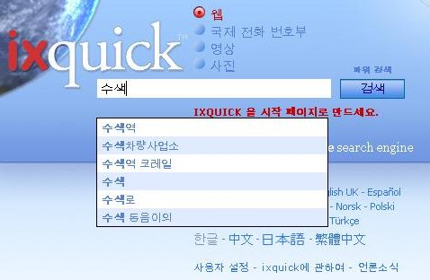

Search Suggestions Explained | ||
|
Q: How do I enable the search suggestions? A: You can enable the search suggestions by selecting it on the 'My Settings' page. The 'My Settings' page can be selected on any Ixquick page. |  | |
|
Q: How do Ixquick's search suggestions work? A: As you key in a query, we match your query term against a large pool of suggestions from general suggestions, and the most popular matching terms are displayed in the descending order of popularity. | ||
|
Q: How are Ixquick's search suggestions different from other search engines'? A: Most other search engines rely on actual user searches for their search suggestions. Thus, merely by typing in your query, you get to know what others are searching the most. Ixquick, being a pioneer in ensuring User Privacy, doesn't indulge in this. We show the generally relevant suggestions for any query that you type in. | ||
|
Q: Then where do Ixquick's suggestions come from? A: Our suggestions come from a variety of sources ranging from Dictionary words to Common pages of interest freely available on Internet, e.g. Wikipedia pages. | ||
|
Q: Are the suggestions available in all languages? A: Yes, the suggestions are available in all the languages Ixquick offers. | ||
|
Q: Does Ixquick show paid suggestions too? A: No. The suggestions are purely based on the relative popularity. No advertising is involved. | ||
|
Q: I get to see English suggestions for some keywords while I'm using Ixquick in Deutsch? Why does this happen? A: Clearly, English is the primary language of the web. While our algorithm returns the suggestions specific to your language first, in case there are not enough suggestions matching your query in the language of your preference, then we provide some suggestions from English language. Of course, the suggestions in your language are displayed first in the sort order. | ||
|
Q: Can I expect to see personalized suggestions in the future? A: As you're aware, we do not store any personal information of our users. Therefore we can't offer personalized suggestions, it would invade your privacy. | ||
|
Q: I don't want my child to be suggested adult terms. Can I ensure that? A: Of course. The suggestions work in sync with your Web/Picture family filter settings. If your filter settings are set to filter adult results while searching, our algorithm will do its utmost to not show suggestions having adult terms. | ||
|
Q: I have my search suggestions enabled, but I don't view any suggestions. What could be the reason? A: Please check and ensure your browser has Javascript enabled. That's a must for Search Suggestions to work. | ||
|
Q: I don't use 'cookies', or delete them regularly. Can I still use the search suggestions option? A: Yes. you can. Being a privacy search engine we have created a 'Generate URL' option, that allows you to save your preferences in a URL, rather than having to use a cookie. The 'Generate URL' option is available on the bottom of the 'Settings' page. |
||